Orase minunate
Alba-Iulia
Atractia numarul 1 in Alba-Iulia este, fara doar si poate, Cetatea Alba Carolina si traseul din cadrul cetatii. Cetatea este o fortareata in stil Vauban cu 7 bastioane. A fost construita de catre 20.000 de iobagi in perioada 1716 - 1738. Cetatea este considerata cea mai impresionanta constructie de acest gen din Europa. In cadrul Cetatii pot fi vizitate mai multe lucruri printre care: Palatul Apor, Palatul Principilor, Monumentul Custozza etc. Este minunat sa te plimbi intr-o zi de vara pe stradutele din Cetate, manancand o inghetata de la magazinasele din interior si facand poze cu "oamenii" impietriti de prin zona. Printre alte atractii: Muzeul National al Unirii Alba Iulia, Biblioteca Battheynaeum, Colectia muzeala a Arhipeiscopiei Ortodoxe, Catedrala Episcopala Ortodoxa Sfanta Treime etc.
 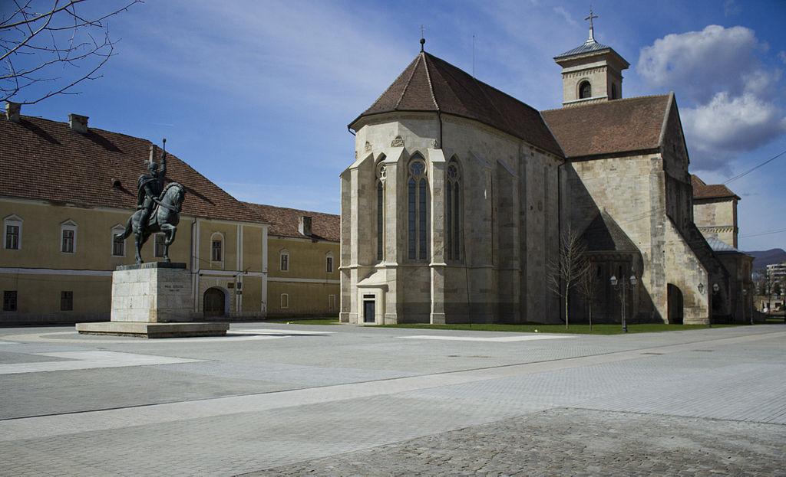
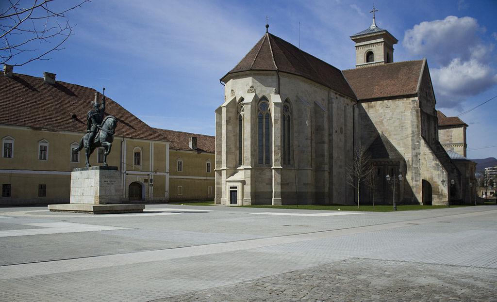
Brasov
Orasul Brasov este, fara discutii, unul dintre cele mai frumoase si vizitate orase din Romania. Si asta se intampla si datorita faptului ca se afla la munte unde aerul este curat si oamenii mult mai calmi. Punte de atractie: Biserica Neagra, Cladirea Sfatului, Poarta Ecaterina, Turnul Negru, Strada Sforii, Sinagoga Neologa si cea Ortodoxa, Muzeul de Arta, Piata Sfatului etc.
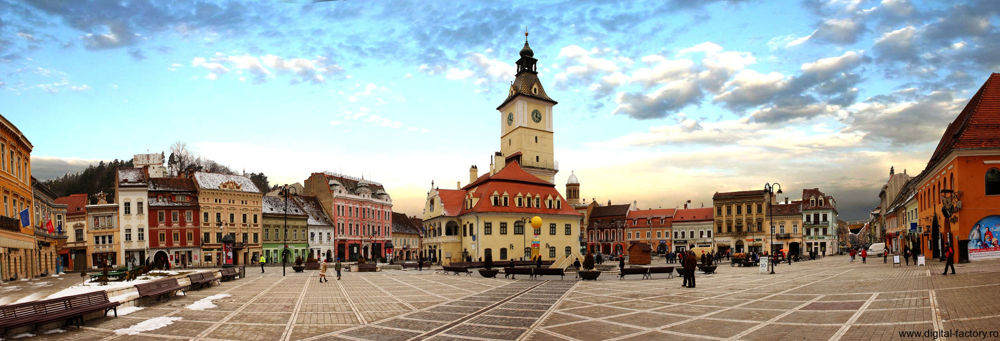 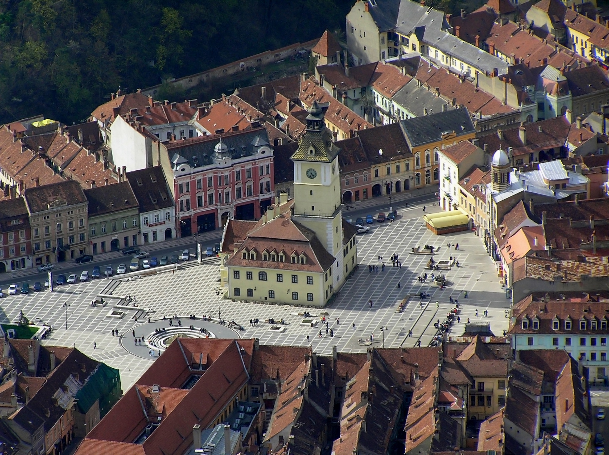Sighisoara
Toata lumea care merge in Sighisoara merge pentru a se plimba prin Cetatea Medievala Sighisoara, iar daca prinzi si Festivalul care se tine in cetate este minunat. Alte atractiiL: Cimitirul Bisericii Evanghelice, Camera de tortura, Castelul Apaffy, Biserica fortificata Biertan "Birthalm", Rezervatia Breite, Sala de arme, Salina Praid, Satul scufundat Bezid etc.
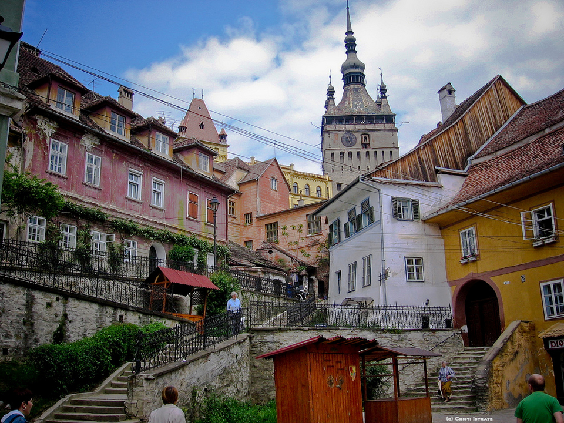 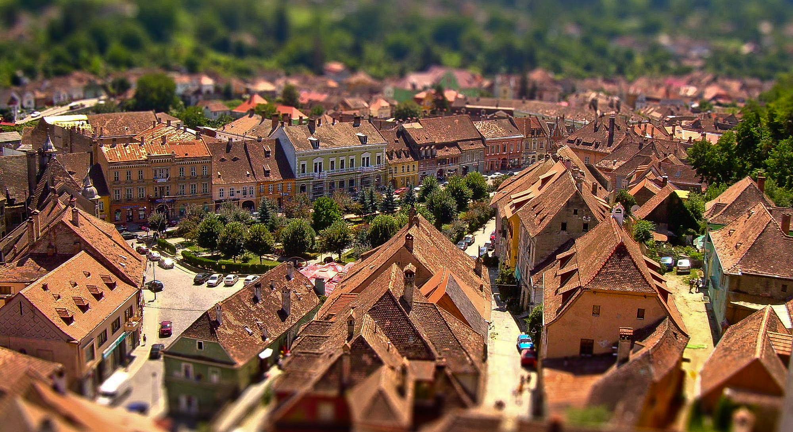Sibiu
Toata lumea merge la Sibiu pentru Festivalul International de Teatru de la Sibiu. Dar la Sibiu ar trebui sa mergi in orice zi din an, mai ales iarna de Craciun sau toamna cand orasul este ascuns sub frunze si mangaiat de un soare bland. La Sibiu te poti plimba pe stradutele magice, poti savura un ceai si poti manca o prajitura pufoasa in timp ce mergi agale uitandu-te la oameni cat de frumosi si calmi sunt. Iata care ar fi cele mai importante atractii turistice din zona: Turnul Sfatului, Muzeul Civilizatiei Traditionale ASTRA, Parcul ASTRA, Catedrala Evanghelica, Casa cu cariatide, Biserica Romano Catolica, Pasajul Scarilor si nu in ultimul rand, Piata Mare Sibiu si Piata Mica, Gradina Zoologica.
 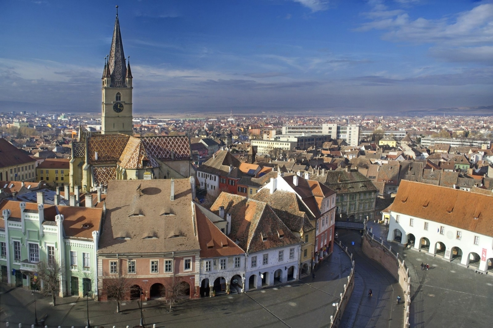
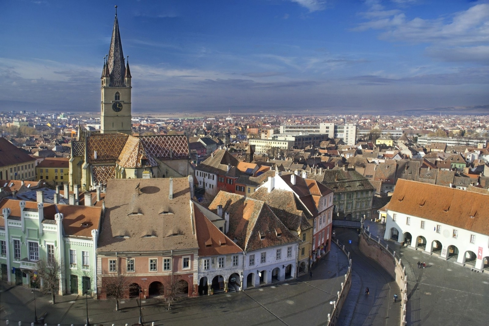
Cluj-Napoca
Foarte multa lume vorbeste frumos despre Cluj si despre oamenii creativi si minunati de acolo. Poate ca nu este cel mai frumos oras din Romania, dar este cu siguranta un oras ce trebuie vizitat mai ales toamna sau pe la sfarsitul verii cand soarele este mai prietenos. Printre atractiile turistice amintim de: Casa Matei Corvin, Bastionul Croitorilor, Biserica Calvaria Manastur, Catedrala Ortodoxa, Sinagoga neoloaga, Biserica Sf. Mihail, Muzeul de Arta, Muzeul de etnografie, Muzeul de farmacie etc. De asemenea, nu uitati, sa vizitati si palatele: Rhedey, Josika si Szeky.
 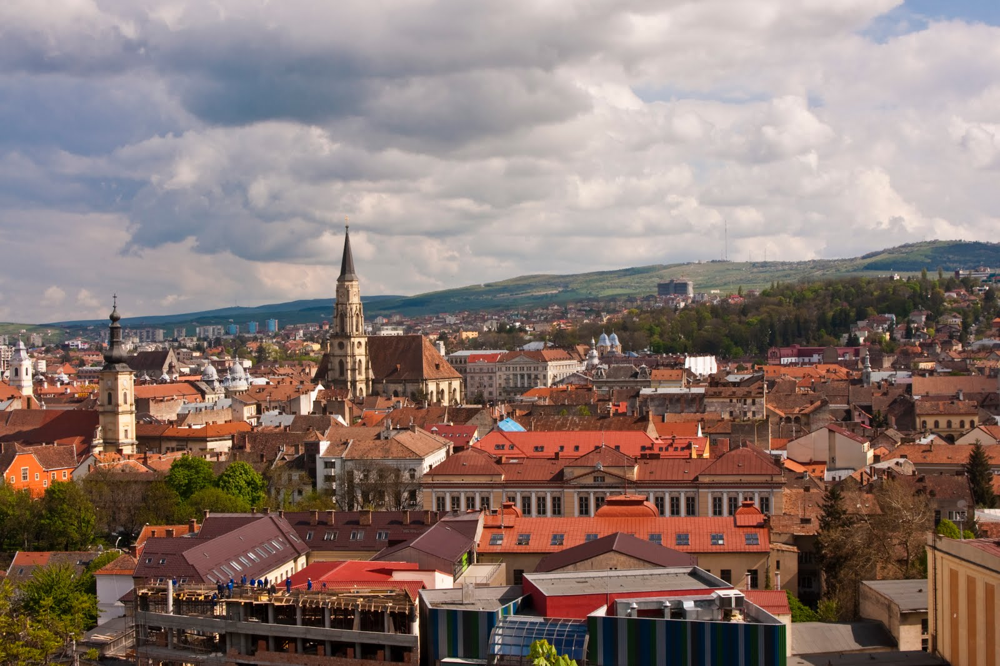
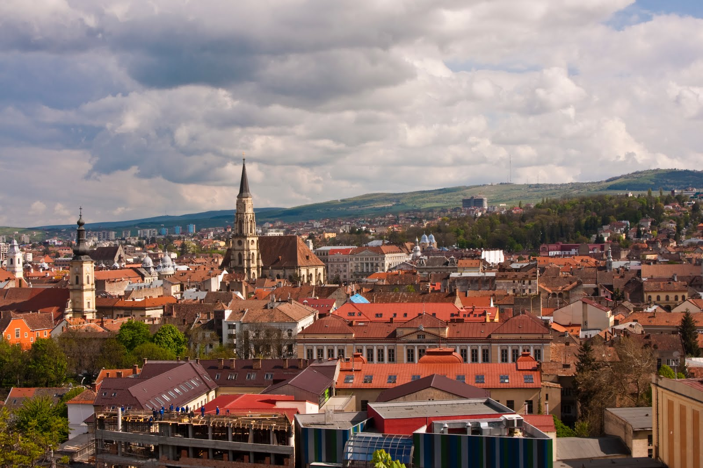
Timisoara
Un alt oras din Romania, pe care trebuie neaparat sa-l vizitati, este Timisoara. Desi drumul e lung pana acolo si destul de obositor, indiferent daca mergi cu masina sau cu trenul, cand ajungi acolo simti ca a meritat. Un oras foarte curat si cuminte, cu oameni primitori si zambete sincere, de care te vei atasa in doar cateva ore. Iar dupa ce treci de mirajul de inceput poti merge sa vizitezi urmatoarele: Castelul Huniazilor, Catedrala Mitropolitana, Catedrala Sarba, Palatul Neuhausz, Palatul Marbl, Statuia Sfanta Treime, Casa cu Atlanti, Casa Emmer, Casa cu axa de fier, Parcul Botanic, Domul Romano-catolic, Bastionul Maria Theresia si, nu in ultimul rand, Parcul Rozelor.
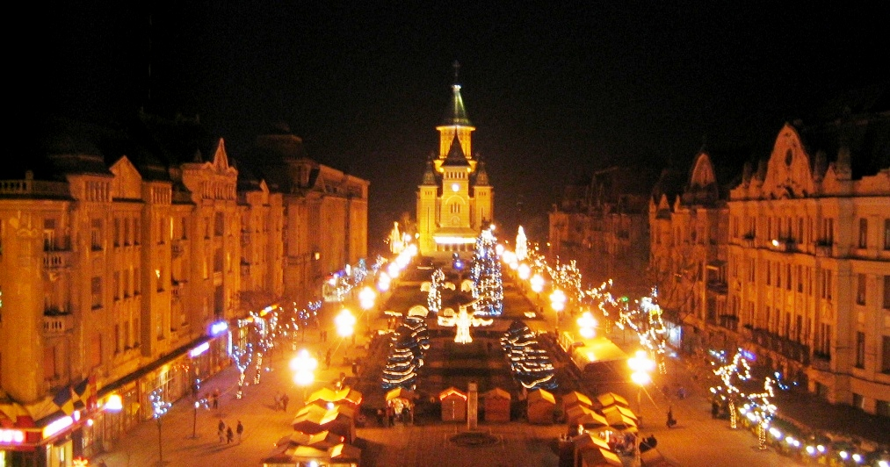
Iasi
Desi multi stramba din nas cand aud de zona Moldovei, orasul Iasi merita vizitat cu siguranta. Si desi este un oras foarte aglomerat, faptul ca este si centru universitar ii ofera o atitudine tanara de care te vei bucura cu siguranta. Merita sa vizitezi Palatul Culturii, care este impresionant, sa te plimbi prin Parcul Copou si sa cobori spre Universitate la pas, Mitropolia Moldovei si Bucovinei, Manastirea Sf. Trei Ierarhi, Casa Dosoftei, Casa Vasile Pogor, Muzeul Memorial Poni-Cernatescu etc. De asemenea, nu trebuie sa parasesti Iasul pana nu ai vizitat Gradina Botanica, una dintre cele mai mari si impresionante din tara.
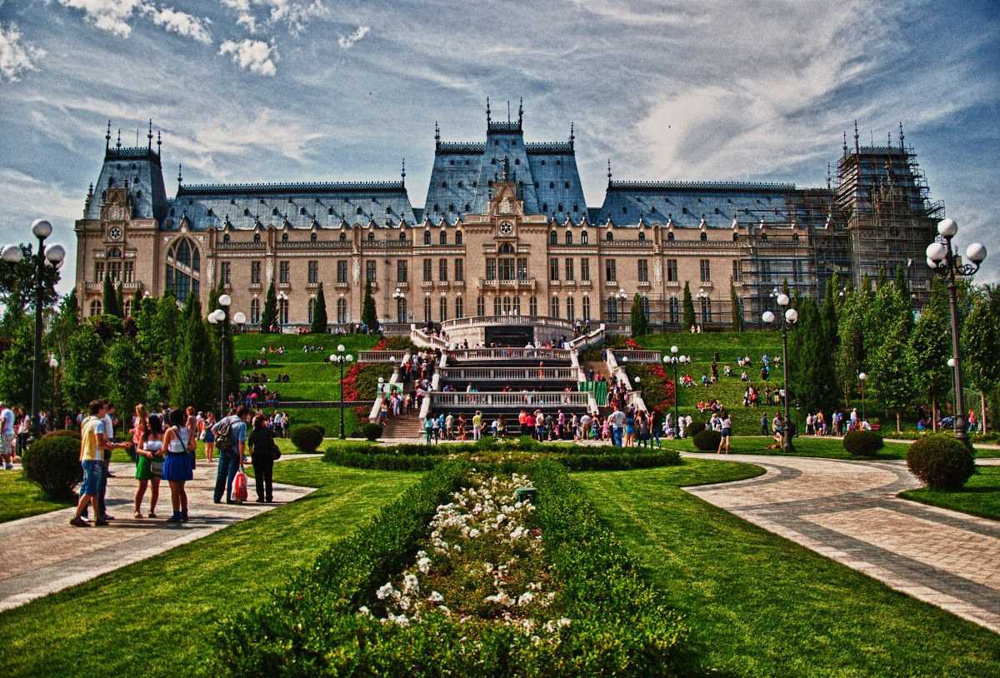 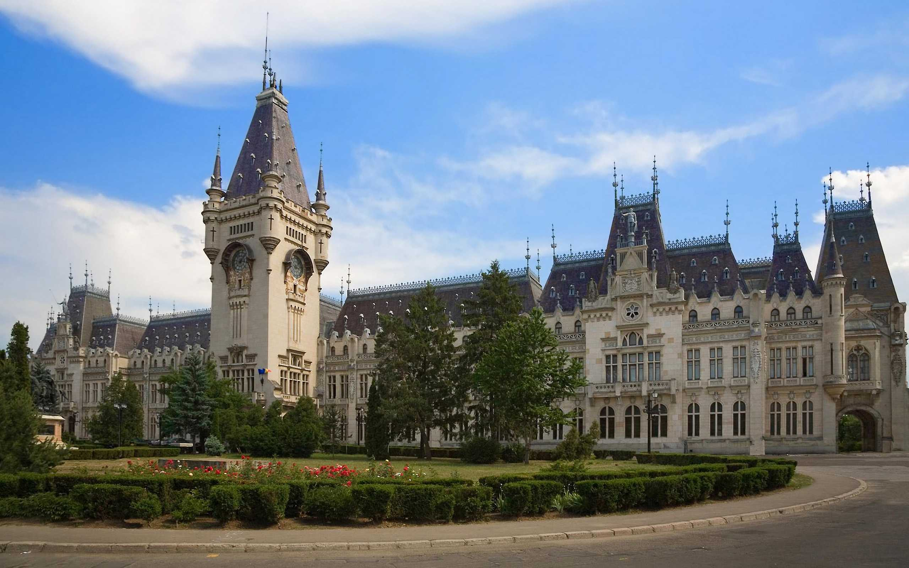Oradea
La inceputul anului s-a facut un sondaj la care au participat 57.725 de oameni, iar toti acesti oameni au cazut de acord cu faptul ca Oradea este cel mai frumos oras din Romania, pe locul II fiind orasul Piatra Neamt. Orasul a fost mentionat pentru prima oara in anul 1113 si a fost rezultatul unei evolutii ce s-a intins pe o perioada de mai multe secole. Dupa ce a fost distrus intr-o proportie destul de mare de ostile lui Ali Oglu Malcovici, in a doua jumatate a secolului 15, acesta a fost repopulat de catre Regele Ungariei, Carol Robert de Anjou. Orasul este amplasat geografic foarte bine, astfel municipiul se gaseste la numai 12 km de Baile Felix, cea mai mare statiune balneo-climaterica permanenta din Romania. Iar pe teritoriul Bihorului se afla si multe alte obiective turistice atractive: statiunea Stana de Vale, formatiunile carstice din Muntii Apuseni, spectaculoasele vai ale raurilor ce strabat judetul, obiceiurile si traditiile de pe intreg cuprinsul sau etc.
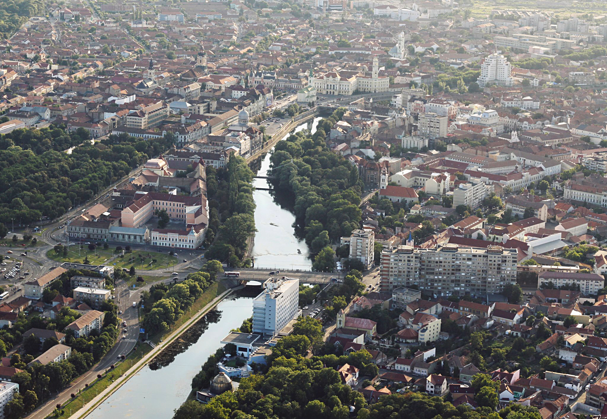
Targu Mures
Cu toate ca in Targiu Mures nu s-au pastrat cladiri deosebit de vechi, din cauza incendiilor de-a lungul timpului, vechea urbe reuseste sa pastreze cumva aerul de oras medieval. Pentru a te bucura de acest aspect ar trebui sa te plimbi prin piata Trandafirilor, unde vei gasi o serie de cladiri frumos ornamentate care amintesc de vechiul targ din perioada medievala. Aici poti vizita: Cetatea Medievala, Biserica Reformata, Palatul Culturii, Scara Rakoczi, Casa Banyai, Teatrul etc.
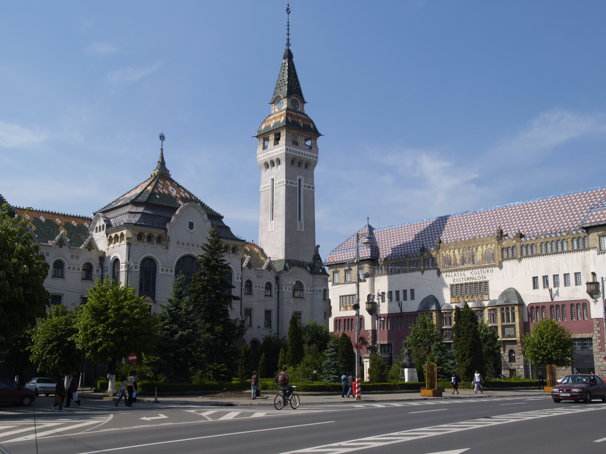 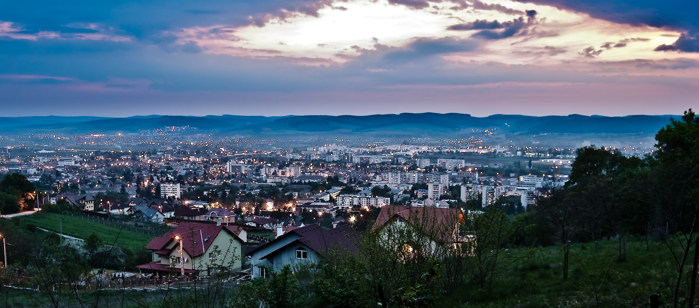Piatra Neamt
Piatra Neamt este municipiu de resedinta al judetului Neamt si este situat pe valea Bistritei, in nord-estul Romaniei cu doar 85.055 de locuitori. Orasul se bucura de cateva avantaje, avand o clima temperat continentala, verile sunt scurte si racoroase, toamna este lunga iar iarna blanda fara geruri mari. In Piatra poti vizita muzee, conace, lacase de cult, cetati, edificii culturale, rezervatii naturale etc. La doar 60 km de Piatra Neamt se afla Parcul National Cheile Bicazului, pe care, daca nu ai apucat sa-l vezi pana acum, ar merita sa o faci.
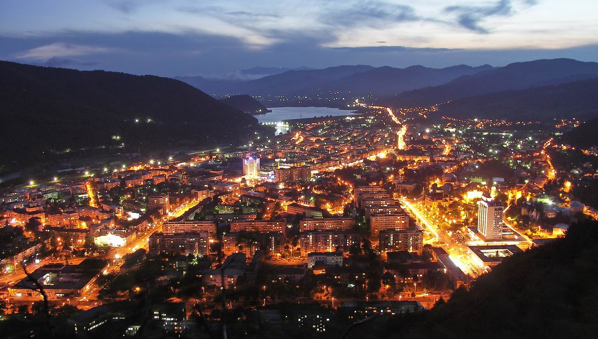 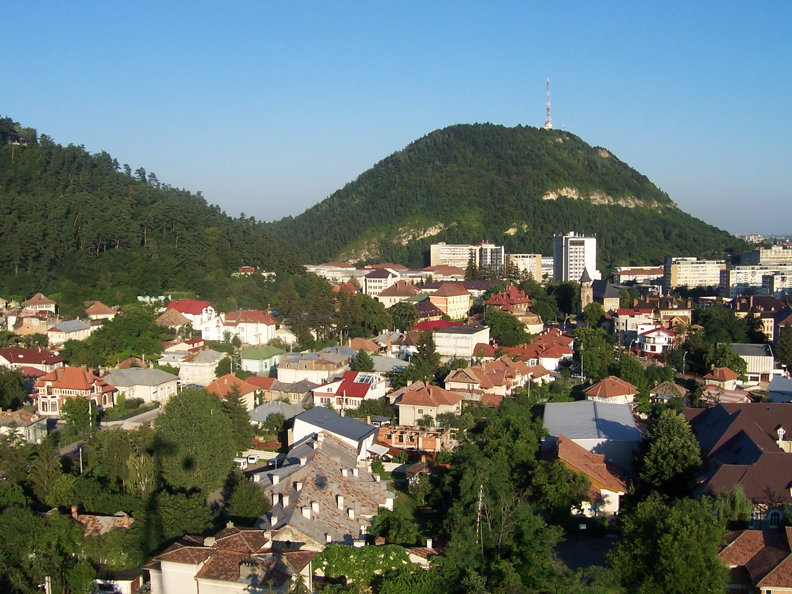